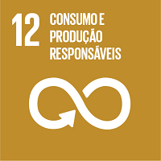

introdução
Bem-vindo ao Movimento ODS Santa Catarina! Nosso objetivo é promover os Objetivos de Desenvolvimento Sustentável (ODS) da ONU em nossa comunidade, incentivando ações e educação para um futuro mais sustentável. O ODS 12 visa assegurar padrões de produção e consumo sustentáveis, reduzindo a pegada ecológica e promovendo o uso eficiente de recursos naturais. Para alcançar essas metas, é essencial implementar ações coordenadas globalmente, com os países desenvolvidos liderando a gestão sustentável dos recursos naturais até 2030. Além disso, buscamos reduzir pela metade o desperdício de alimentos e garantir a redução de produtos químicos e resíduos até 2020, incentivando práticas sustentáveis nas empresas e promovendo compras públicas sustentáveis.
Consumo e Produção Responsáveis
Assegurar padrões de produção e de consumo sustentáveis.
Para alcançar as metas deste ODS, a mudança nos padrões de consumo e produção se configuram como medidas indispensáveis na redução da pegada ecológica sobre o meio ambiente. Essas medidas são a base do desenvolvimento econômico e social sustentável. As metas do ODS 12 visam a promoção da eficiência do uso de recursos energéticos e naturais, da infraestrutura sustentável, do acesso a serviços básicos. Além disso, o objetivo prioriza a informação, a gestão coordenada, a transparência e a responsabilização dos atores consumidores de recursos naturais como ferramentas chave para o alcance de padrões mais sustentáveis de produção e consumo.
Metas do Objetivo 12
- Implementar o Plano Decenal de Programas Sobre Produção e Consumo Sustentáveis, com todos os países tomando medidas, e os países desenvolvidos assumindo a liderança, tendo em conta o desenvolvimento e as capacidades dos países em desenvolvimento.
- Até 2030, alcançar gestão sustentável e uso eficiente dos recursos naturais.
- Até 2030, reduzir pela metade o desperdício de alimentos per capita mundial, em nível de varejo e do consumidor, e reduzir as perdas de alimentos ao longo das cadeias de produção e abastecimento, incluindo as perdas pós-colheita.
- Até 2020, alcançar o manejo ambientalmente adequado dos produtos químicos e de todos os resíduos, ao longo de todo o ciclo de vida destes, de acordo com os marcos internacionalmente acordados, e reduzir significativamente a liberação destes para o ar, água e solo, para minimizar seus impactos negativos sobre a saúde humana e o meio ambiente.
- Até 2030, reduzir substancialmente a geração de resíduos por meio da prevenção, redução, reciclagem e reuso.
Mais Metas do Objetivo 12
- Incentivar as empresas, especialmente as empresas grandes e transnacionais, a adotar práticas sustentáveis e a integrar informações de sustentabilidade em seu ciclo de relatórios.
- Promover práticas de compras públicas sustentáveis, de acordo com as políticas e prioridades nacionais.
- Até 2030, garantir que as pessoas, em todos os lugares, tenham informação relevante e conscientização sobre o desenvolvimento sustentável e estilos de vida em harmonia com a natureza.
- Apoiar países em desenvolvimento para que fortaleçam suas capacidades científicas e tecnológicas em rumo à padrões mais sustentáveis de produção e consumo.
- Desenvolver e implementar ferramentas para monitorar os impactos do desenvolvimento sustentável para o turismo sustentável que gera empregos, promove a cultura e os produtos locais.
- Racionalizar subsídios ineficientes aos combustíveis fósseis, que encorajam o consumo exagerado, eliminando as distorções de mercado, de acordo com as circunstâncias nacionais, inclusive por meio da reestruturação fiscal e a eliminação gradual desses subsídios prejudiciais, caso existam, para refletir os seus impactos ambientais, tendo plenamente em conta as necessidades específicas e condições dos países em desenvolvimento e minimizando os possíveis impactos adversos sobre o seu desenvolvimento de maneira que proteja os pobres e as comunidades afetadas.